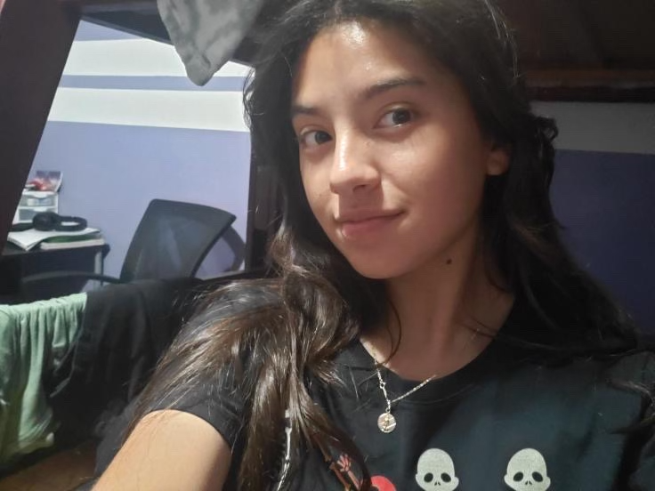
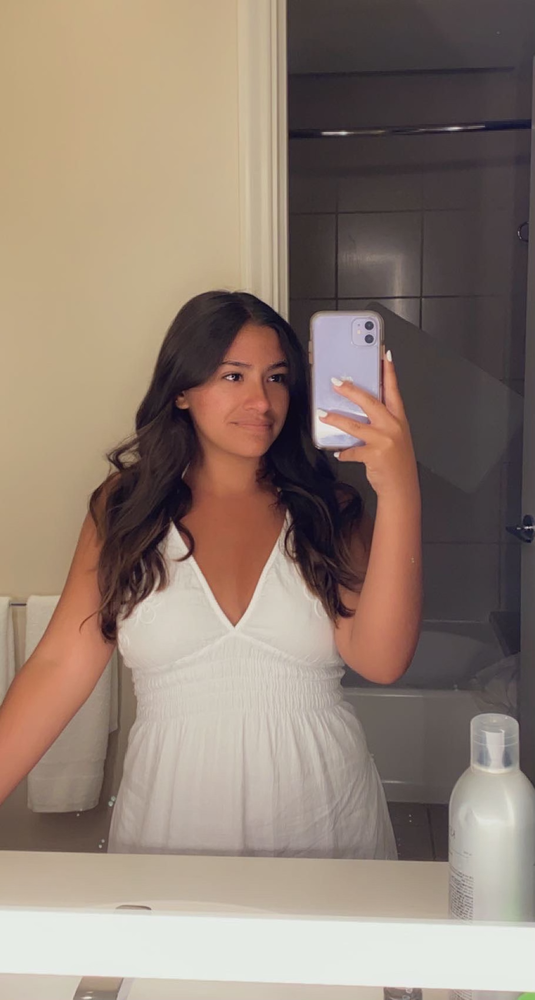

Mia - President
- Grade: Sophmore at San Diego State University
- Pronouns: She/Her
- Sexuality: Straight
- Time in GSA: I have been in GSA for 3 years
- Fav Thing About GSA: My favorite thing about GSA is learning from the members and spreading acceptance throughout the community
- Fun Fact: I am very lactose intolerant

Galilea - Social Media Manager
- Grade: Junior at Pioneer High School
- Pronouns: She/Her
- Sexuality: Straight
- Time in GSA: I have been in Whittier Youth GSA for 3 months!
- Fav Thing About GSA: My favorite thing about GSA is the people. The members here are supportive, kind, and loving people who have your back no matter who you are!
- Fun Fact: I love helping others and I have a twin sister, Isabel!
Isabel - Social Media Manager
- Grade: Junior at Pioneer High School
- Pronouns: She/Her
- Sexuality: Straight
- Time in GSA: I have been in Whittier Youth GSA for 3 months!
- Fav Thing About GSA: My favorite thing about GSA is the environment because we don't necessarily see each other as members of a club, but instead as members of a family. I also enjoy how understanding everyone is towards one and another.
- Fun Fact: I am 30 minutes older than my twin sister, Galilea


Scarlet - Mentor
- Grade: Junior at LA County High School for the Arts
- Pronouns: She/Her
- Sexuality: Pansexual
- Time in GSA: I have been with Whittier Youth GSA for 3 years!
- Fav Thing About GSA: My favorite thing about GSA is the family you get out of it. You also get to connect with people on a more personal level, and have a great environment to learn more about yourself and others.
- Fun Fact: A fun fact about me is that I have past experience as a stilt walker and a trapeze artist
Mason - Mentor
- Grade: Junior at Whittier High School
- Pronouns: They/Them/Theirs
- Sexuality: Toric
- Time in GSA: I have been in GSA for 3 years!
- Fav Thing About GSA: My favorite thing about GSA is being able to discuss our experiences as LGBTQIA+ people and allies. It is important to spark necessary dialogues regarding our community, especially within a city that has limited resources for LGBTQIA+ youth.
- Fun Fact: A fun fact about me is that I can play three instruments and have been doing origami for five years